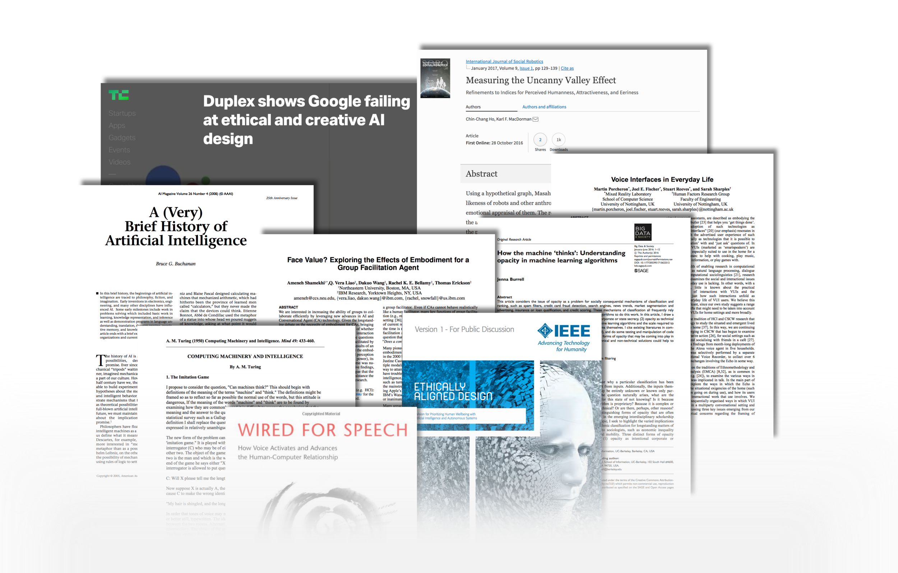
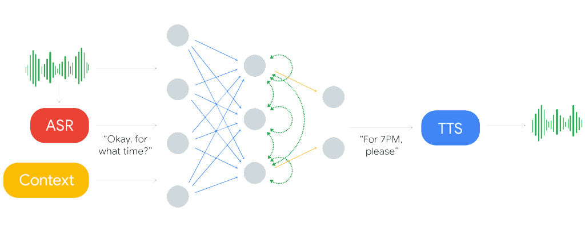
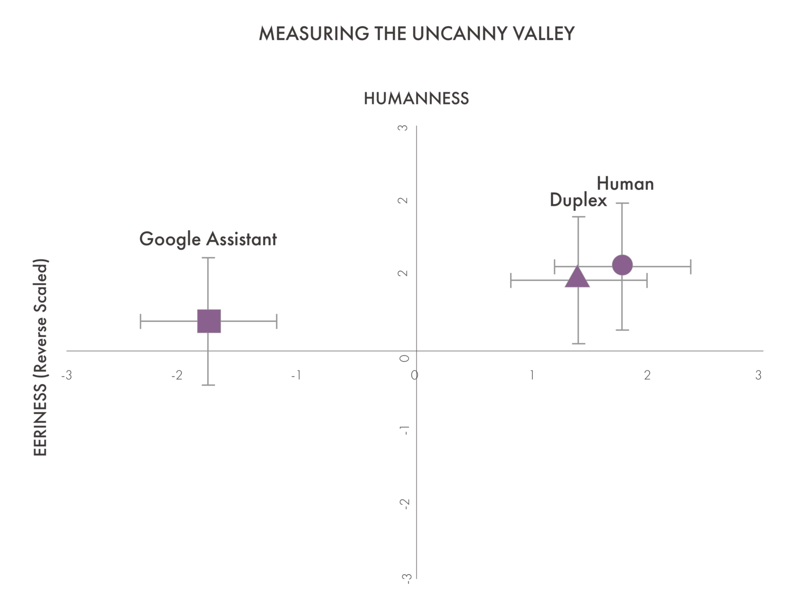
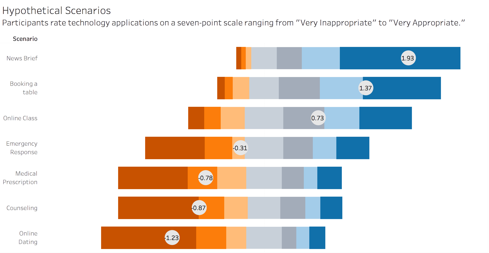

Evaluating opaque voice assistants from a user perspectice
Role: MA thesis researcher at University of Texas at Austin
May 2018 - October 2018

Synthetic speech that can mimic human language has been a long time coming, but it arrived with Google Duplex. Put simply, this thesis project asks the question: "Is Google Duplex too human?" and explores users' emotional response to different types of virtual assistant voices. My findings advise researchers and industry designers to follow a set of ethical guidelines when considering the use of human synthetic voices, backed by an experimental design and a survey with 405 participants.
This research was funded by the Dallas Morning News and utilized the following tools: MTurk, Qualtrics dynamic survey design, statistical analysis, audio production, topical modeling.
This research was funded by the Dallas Morning News and utilized the following tools: MTurk, Qualtrics dynamic survey design, statistical analysis, audio production, topical modeling.
Background
On May 9, 2018, Google released a new virtual assistant feature called Google Duplex. Duplex surprised Google I/O conference attendees with a convincingly human voice, seemingly indistinguishable as a robot built upon natural language processing and AI components. This new display of technology brings us back to the many questions we ask about AI. Do humans really want technology that mimics human conversation? And could this erode our trust in what we hear?No study had been done that specifically focuses on measuring the uncanny valley for an audio-only experience, which means we simply don't know what emotional reaction users might have to a product like Google Duplex! This project begins to provide answers to the following questions:
- Can end users reliably distinguish between a human voice and today's advanced machine voices?
- What degree of realism do end users prefer when using a virtual assistant with a synthetic voice?
- What is the emotional response of end users when listening to virtual assistants with synthetic voices?Is this ethical? What do participants think? What are their concerns?

On May 9, 2018, Google released a new virtual assistant feature called Google Duplex. Duplex surprised Google I/O conference attendees with a convincingly human voice, seemingly indistinguishable as a robot built upon natural language processing and AI components. This new display of technology brings us back to the many questions we ask about AI. Do humans really want technology that mimics human conversation? And could this erode our trust in what we hear?No study had been done that specifically focuses on measuring the uncanny valley for an audio-only experience, which means we simply don't know what emotional reaction users might have to a product like Google Duplex! This project begins to provide answers to the following questions:
- Can end users reliably distinguish between a human voice and today's advanced machine voices?
- What degree of realism do end users prefer when using a virtual assistant with a synthetic voice?
- What is the emotional response of end users when listening to virtual assistants with synthetic voices?Is this ethical? What do participants think? What are their concerns?
Results
81.7% of users believed that Google Duplex was a human voice, not a machine. End users cannot reliably distinguish between a human and advanced machine voice. Users did reliably discern that the Google Assistant voice was synthetic and that the human voice was a genuine human. This simple measure illustrates that the technology has in fact advanced to a point where synthetic voices can trick the mind.
1st place goes to…the human voice (phew). But users ranked the Google Duplex voice nearly as highly. Weighted averages were used to calculate the rank order for the three audio choices. Before and after the debriefing, the order of preference remained the same, with the human voice being the most preferred. The Google Duplex voice came in second and the Google Assistant voice third. Notably, after the debriefing the Duplex voice fell slightly in popularity.
Uncanny or warm and fuzzy? Users didn't experience uncanny feelings from Google Duplex. They found it equally normal, humanistic, and attractive as a human voice. This is a voice technology that traverses the uncanny valley. We likely won't be feeling any of the spine tingling emotions that Hal made us feel in 2001 Space Odyssey. The revised 2016 Ho and MacDorman indices enable emotional relations among characters to be plotted similarly to Mori's graph of the uncanny valley. Though the human voice in this experiment still has high humanness and low eeriness, the Google Duplex voice was not statistically different. We can thus say that Google has succeeded in traversing the uncanny valley for mimicking a human voice. Error bars were between .42 and .86 on a scale of -3 to 3.Is this… ethical? The answer is it all depends. 405 participants had vastly different opinions on this matter. However, I was able to extrapolate a few themes:Users are more comfortable with the idea of using human-like voice assistants in low risk situations such as getting the news or booking an online table. As risk increases to matters such as emergency response, psychological counseling, and filling a medical prescription, users find this idea uncomfortable.The scenario of online dating is fascinating: users are more uncomfortable with this hypothetical scenario than even relying on technology to properly filling a medical prescription. Why is this? I suspect that filling a subscription or calling 911 tends to be a transactional type of conversation that involves largely exchanging facts. Meanwhile, online dating is relational and emotional. The Uncanny Valley theory discusses that, as encounters with machines approach intimate or emotional relationships, users may become increasingly wary. It may be more foreseeable that a voice assistant, using advanced processing to communicate and make decision, might be able to provide a more efficient emergency hotline than 911 currently provides.

81.7% of users believed that Google Duplex was a human voice, not a machine. End users cannot reliably distinguish between a human and advanced machine voice. Users did reliably discern that the Google Assistant voice was synthetic and that the human voice was a genuine human. This simple measure illustrates that the technology has in fact advanced to a point where synthetic voices can trick the mind.
1st place goes to…the human voice (phew). But users ranked the Google Duplex voice nearly as highly. Weighted averages were used to calculate the rank order for the three audio choices. Before and after the debriefing, the order of preference remained the same, with the human voice being the most preferred. The Google Duplex voice came in second and the Google Assistant voice third. Notably, after the debriefing the Duplex voice fell slightly in popularity.
Uncanny or warm and fuzzy? Users didn't experience uncanny feelings from Google Duplex. They found it equally normal, humanistic, and attractive as a human voice. This is a voice technology that traverses the uncanny valley. We likely won't be feeling any of the spine tingling emotions that Hal made us feel in 2001 Space Odyssey. The revised 2016 Ho and MacDorman indices enable emotional relations among characters to be plotted similarly to Mori's graph of the uncanny valley. Though the human voice in this experiment still has high humanness and low eeriness, the Google Duplex voice was not statistically different. We can thus say that Google has succeeded in traversing the uncanny valley for mimicking a human voice. Error bars were between .42 and .86 on a scale of -3 to 3.Is this… ethical? The answer is it all depends. 405 participants had vastly different opinions on this matter. However, I was able to extrapolate a few themes:Users are more comfortable with the idea of using human-like voice assistants in low risk situations such as getting the news or booking an online table. As risk increases to matters such as emergency response, psychological counseling, and filling a medical prescription, users find this idea uncomfortable.The scenario of online dating is fascinating: users are more uncomfortable with this hypothetical scenario than even relying on technology to properly filling a medical prescription. Why is this? I suspect that filling a subscription or calling 911 tends to be a transactional type of conversation that involves largely exchanging facts. Meanwhile, online dating is relational and emotional. The Uncanny Valley theory discusses that, as encounters with machines approach intimate or emotional relationships, users may become increasingly wary. It may be more foreseeable that a voice assistant, using advanced processing to communicate and make decision, might be able to provide a more efficient emergency hotline than 911 currently provides.
There was no general consensus on whether products should include disclaimers, whether ethical guidelines should be context specific or blanket statements, or whether participants would like voice assistants to sound like human. Shown below, it is clear that there was a wide range of answers.
The first open ended question asked participants if they had specific concerns about voice assistants that could mimic human speech. The biggest concern raised was on the topic of data privacy and crime. Participants are concerned about crimes such as scams, phishing, and identity fraud. There were also concerns for how it could increase the amount of spam, telemarketing, and ads users are exposed to. About a quarter of the participants did not think there were any particular issues that could come from this technology, apart from the loss of jobs. Another quarter stated that they would choose to not interact with such a technology at all. A few participants stated that there should be clear disclaimers from voice assistants, but that they were interested in seeing the industry progress.
The second open-ended question asked participants to list ideas they might have for controlling or lowering risks of this technology. This question yielded the most interesting and diverse set of answers in the entirety of the survey. Answers included specific steps, such as disclaimers, government intervention, and beholding companies to guidelines and rigorous testing. There were also a large number of responses that voiced concerns that there was no way to lower risk and that we might face a future in which AI becomes more intelligent than humans.
A key insight was that multiple participants stated that they wouldn't have been aware of these potential problems had they not experienced being “tricked” by Google Duplex. Companies can do a great deal through design and PR messaging to negate ethical concerns from the public, but when users find out, they feel disconcerted.

The first open ended question asked participants if they had specific concerns about voice assistants that could mimic human speech. The biggest concern raised was on the topic of data privacy and crime. Participants are concerned about crimes such as scams, phishing, and identity fraud. There were also concerns for how it could increase the amount of spam, telemarketing, and ads users are exposed to. About a quarter of the participants did not think there were any particular issues that could come from this technology, apart from the loss of jobs. Another quarter stated that they would choose to not interact with such a technology at all. A few participants stated that there should be clear disclaimers from voice assistants, but that they were interested in seeing the industry progress.
The second open-ended question asked participants to list ideas they might have for controlling or lowering risks of this technology. This question yielded the most interesting and diverse set of answers in the entirety of the survey. Answers included specific steps, such as disclaimers, government intervention, and beholding companies to guidelines and rigorous testing. There were also a large number of responses that voiced concerns that there was no way to lower risk and that we might face a future in which AI becomes more intelligent than humans.
A key insight was that multiple participants stated that they wouldn't have been aware of these potential problems had they not experienced being “tricked” by Google Duplex. Companies can do a great deal through design and PR messaging to negate ethical concerns from the public, but when users find out, they feel disconcerted.
Recommendations
Remember that my experiment is limited. I had 405 participants, I analyzed reactions to 1 gender (male), and explored just 1 specific conversation script (booking a restaurant table). However, I recommend the following guidelines to HCI researchers and industry designers.
Use voices that sound human, but be transparent. Users genuinely like the feature of a human-sounding voice and it can be a cost effective way to design a delightful experience. But approval ratings fall when users feel tricked. It can lower trust in a brand and may have long-standing societal impact in how we communicate. Provide disclaimers in a simple and comprehensible way.
Be context specific. Checking the news, booking a restaurant table, and taking an online class— these uses of the technology users are A OK. But avoid high risk scenarios such as making a voice assistant as an alternative to emergency response or a doctor. Emotional contexts, such as in online dating, are tricky. We need a lot more research before release anything on the market. Users were generally against seeing technology become relational, and were more interested in “just getting things done.”
Ask your users. Do your user research before releasing something on the market. Just because you can make something, doesn't mean you should. The Google Duplex case is an example we can all learn from.
Have user interest in mind. With new technologies, users can't always understand dangers. It's up to tech companies to have their best interests in mind. Many of the respondents voiced concerns that tech companies would enforce whatever ethical or design standards they were inclined towards, without proper planning.
Remember that my experiment is limited. I had 405 participants, I analyzed reactions to 1 gender (male), and explored just 1 specific conversation script (booking a restaurant table). However, I recommend the following guidelines to HCI researchers and industry designers.
Use voices that sound human, but be transparent. Users genuinely like the feature of a human-sounding voice and it can be a cost effective way to design a delightful experience. But approval ratings fall when users feel tricked. It can lower trust in a brand and may have long-standing societal impact in how we communicate. Provide disclaimers in a simple and comprehensible way.
Be context specific. Checking the news, booking a restaurant table, and taking an online class— these uses of the technology users are A OK. But avoid high risk scenarios such as making a voice assistant as an alternative to emergency response or a doctor. Emotional contexts, such as in online dating, are tricky. We need a lot more research before release anything on the market. Users were generally against seeing technology become relational, and were more interested in “just getting things done.”
Ask your users. Do your user research before releasing something on the market. Just because you can make something, doesn't mean you should. The Google Duplex case is an example we can all learn from.
Have user interest in mind. With new technologies, users can't always understand dangers. It's up to tech companies to have their best interests in mind. Many of the respondents voiced concerns that tech companies would enforce whatever ethical or design standards they were inclined towards, without proper planning.